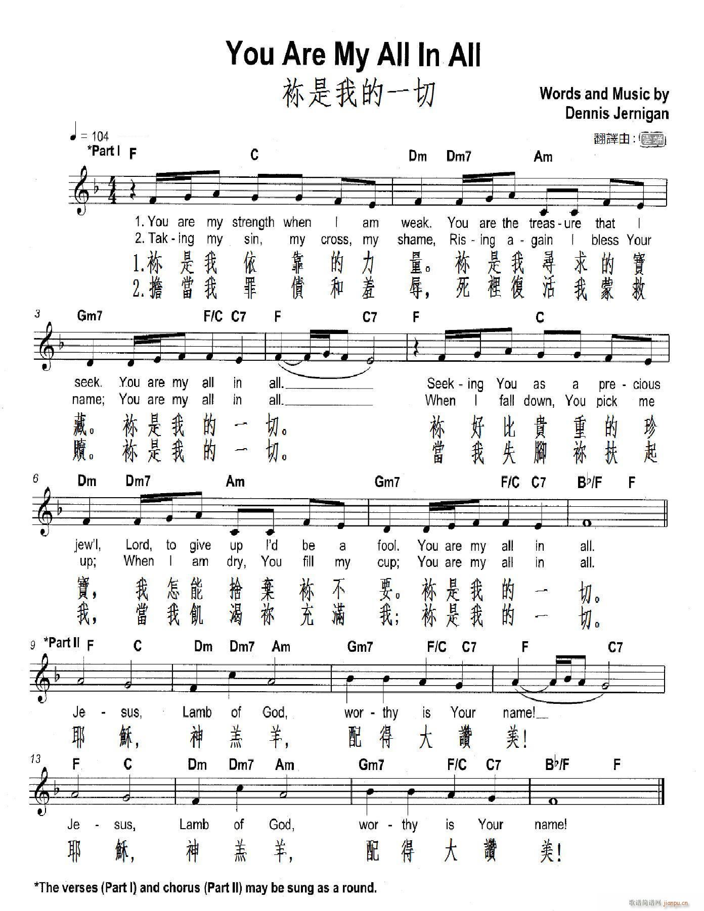

1186 You are My All in All 祢是我一切
|
|
|
|
You are my strength when I am weak
You are the treasure that I seek
You are my all in all
Seeking You as a precious jewel
Lord to give up, I'd be a fool
You are my all in all
Jesus, Lamb of God, worthy is Your name
Jesus, Lamb of God, worthy is Your name
Taking my sin, my cross, my shame
Rising again, I bless Your name
You are my all in all
When I fall down, You pick me up
When I am dry, You fill my cup
You are my all in all |
你是我依靠的力量
你是我尋求的寶藏
你是我的一切
你好比貴重的珍寶
我怎能捨棄你不要
你是我的一切
耶穌 神羔羊 配得大讚美
耶穌 神羔羊 配得大讚美
祢洗淨我一切罪孽，
挪去我所有的羞愧，
祢是我的一切﹗
當我失腳祢扶起我，
當我飢渴祢充滿我，
祢是我的一切﹗
|
|

http://www.jianpu.cn/pu/40/409758.htm |
|
|
|
TITLE: "You Are My All in All"
AUTHOR: Dennis Jernigan
TUNE: ALL IN ALL
COMPOSER: Dennis Jernigan
SOURCE: Worship
& Song, no. 3040
SCRIPTURE: John 6:31, 35; Ephesians 1:20; Revelation 1:8; 5:11-14
TOPICS: Creator; cross; Lamb of God; name of Jesus; power and might; praise
and thanksgiving; rise up; seek; sending forth; shame; sin; thirst;
weakness; worthy
Background
Dennis Jernigan (b. 1954, Sapulpa, Oklahoma) is a graduate of Oklahoma
Baptist University and is a successful Christian singer-songwriter of
contemporary Christian music. His primary instrument is the piano. Jernigan
prefers not to think of himself as a songwriter, but rather as a "song
receiver." He wrote "You Are My All in All" in 1992, and it remains his most
performed song today. Other of his popular works include: "We Will Worship
the Lamb of Glory," "Thank You," "Great is the Lord Almighty," "Who Can
Satisfy My Soul" (There is a Fountain), "I Belong to Jesus," and "Nobody
Fills My Heart Like Jesus."
Jernigan's ministry is based on his own life story and personal experience,
which he shares in concerts and programs in churches in the U.S.A. and
around the world. Jernigan was a homosexual. He attended a 2nd
Chapter of Acts concert in Norman, Oklahoma and now
self-identifies as "ex-gay," although he prefers the terms "reborn" or
"God's new creation." Jernigan had served as vice-chairman of Exodus
International, a position he voluntarily resigned in
June 2012.
Jernigan and his wife, Melinda, were married in 1984. They live with their
nine children on a small farm in Muskogee, Oklahoma.
Words
"You Are My All in All" is a song in praise of Christ, for who Christ is and
what he does. It is cast as a personal prayer to Jesus, describing those
situations and attributes in rhymed couplets, all of which conclude with the
proclamation, "You are my all in all."
-
your strength in my weakness and the treasure that I seek
-
Christ as a precious jewel and my foolishness to give that
up
-
forgiver of my sin and shame, I rise to bless Christ's
name
-
if I fall, Christ picks me up; if I am dry, Christ fills
my cup
The refrain consists of the phrase, "Jesus, Lamb of God, worthy in your
name," and its repetition.
Music
Musically, the song consists of two parts of equal eight-measure length. The
first half consists of the rhymed couplets in quicker, shorter note values
of mostly eighth and sixteenth notes. The two phrases of the first half are
identical except for the end cadences. The second half consists of longer
note values – mostly quarter and half notes, moving along in sustained
affirmation of the "Jesus, Lamb of God, worthy is your name" phrase. The
genius and beauty of the song is that, because the two halves are of
identical length and harmonic construction, they can be sung together, as a
quodlibet, and may be endlessly repeated until the close.
Guitar chords for each eight-bar section are repeated:
Capo 1: ||: E B | C#m B E | A E B | E B |
| E B | C#m B E | A E B | E :||
Sources
https://www.umcdiscipleship.org/resources/you-are-my-all-in-all
“The Lord is my strength and shield; my heart trusts in Him, and I am helped” (Ps.
28:7)
INTRO.:
A song which pictures the Lord as our strength, shield, and helper is “You Are
My All in All.” The text of stanzas 1 and 2 was written and the tune was
composed both by Dennis L. Jernigan, who was born in 1959 at Sapulpa, OK, to
Samuel Robert Jernigan and Peggy Yvonne Johnson Jernigan. Soon after his
birth, his parents moved to the farm that his grandparents had built and where
his father was raised, three miles from the small town of Boynton, OK.
There he and his brothers attended school. When he was six or seven, his
grandmother Jernigan moved back to the farm in a trailer next to the old
farmhouse where they lived, and she taught him to play the piano by the time he
was nine years old. Each day after school he could be found at his
grandmother’s house practicing piano. The family attended First Baptist
Church where his grandfather Herman Everett Johnson had been minister, his
parents had met, and his father led singing.
(Photograph of Dennis Jernigan)
Jernigan’s relationship with his parents was quite typical for that generation.
They were not an affectionate family. While he did feel affection from his
mother, he never remembered receiving physical affection from his father.
Therefore, his erroneous feelings of being rejected and worthless led to his
secretly pursuing a homosexual lifestyle, which continued through high school
and his four years at Oklahoma Baptist University. He later wrote, “My
problem was not my father. My problem was that I believed a lie. Once Satan got
his foot in the door of my heart, any rejection – no matter how big or how small
– was perceived as a lack of love from my dad (or whomever I felt rejected by at
the time).” Upon his graduation from OBU in 1981, he went to a concert by
a group called The Second Chapter of Acts in Norman, OK. When he heard
their song “Mansion Builder,” he acknowledged the fact that he was totally
helpless and turned everything in his life over to Jesus–thoughts, emotions,
physical body, and his past– taking responsibility for his own sins and yielding
every right to Jesus.
Since then, Jernigan married his wife Melinda in 1983, and they have nine
children. A singer and songwriter of contemporary Christian music, he
heads a music-based Christian ministry from his home in Muskogee, OK. His
ministry is based on his personal experience, which he shares at churches and
other locations around the world. He also campaigned against a proposed Hate
Crimes Bill (H.R. 1592), saying that the legislation’s passage would strip him
of his right to speak freely about his self-identification as ex-gay, though he
states that he does not wish to be labeled as “ex-gay,” but instead as “reborn”
or as “[God’s] new creation.” Having been set free from bondage and
walking away from his old sinful life in 1981, he has produced numerous praise
and worship songs. “You Are My All in All” was copyrighted with two
stanzas in 1991 (although one source gives the date of 1990) by Shepherd’s Heart
Music. A third stanza was added in 1996 by Randall J. Harris. Upon
hearing and thinking of the tune on several occasions, some words came to my
mind which I have set down in a fourth stanza.
Among hymnbooks published by members of the Lord’s church for use in churches
of Christ, the song has appeared in the 1992 Praise
for the Lord edited by John P. Wiegand; the 1994 Songs
of Faith and Praise edited by Alton H. Howard; the 2007 Hymns
for Worship Supplement edited by R. J. Stevens, et. al.; the
2010 Praise
Hymnal and the 2010 Songs
for Worship and Praise both edited by Robert J. Taylor Jr.’
and the 2012 Psalms,
Hymns, and Spiritual Songs edited by Steve Wolfgang, et. al.
The song presents Jesus as everything which we need.
I. In stanza 1, Jesus is said to be our strength
You are my strength when I am weak,
You are the treasure that I seek,
You are my all in all;
Seeking You as a precious jewel,
Lord, to give up I’d be a fool,
You are my all in all.
A. He is our strength because we can be strong in the power of His might: Eph.
6:10
B. Because He is our strength, He is like a treasure that we seek, like a pearl
of great price: Matt. 13:45-46
C. And since He is such a precious jewel, to give up and turn away from Him
would be foolish: 2 Pet. 2:20-22
II. In stanza 2, Jesus is said to have taken our sin
Taking my sin, my cross, my shame,
Rising again I bless Your name,
You are my all in all;
When I fall down You pick me up,
When I am dry You fill my cup,
You are my all in all.
A. Jesus took or bore our sins: 1 Pet. 2:24
B. When we fall down, He will lift us up: Ps. 40:2
C. When we are dry, He will fill our cups to running over: Ps. 23:5
III. In stanza 3, Jesus is said to have brought victory
When the dark powers had done their worst,
Jesus brought victory o’er their curse;
He is our all in all.
Death could not hold the King of Kings,
Now to His heirs new life He brings;
He is our all in all.
A. The “dark powers” likely refer to the spiritual hosts of wickedness which
Satan uses to battle against us: Eph. 6:12
B. However, Jesus brings victory over them and their curse: 1 Cor. 15:57
C. This is possible because death could not hold Him but He rose from the dead:
1 Cor. 15:20-24
IV. In stanza 4, Jesus is said to be coming again
Someday my Lord will come again;
I shall be Oh! so happy then,
He is my all in all.
Rising up in the vaulted sky,
Telling this sinful world good-bye,
He is my all in all.
A. The Bible promises that someday the Lord will come again: Acts 1:9-11
B. When He does, we shall rise up in the sky: 1 Thess. 4:16-17
C. Then we shall tell this sinful world good-bye as it is destroyed and Christ
takes us to the new heaven and earth: 2 Pet. 3:10-13
CONCL.:
The chorus praises Jesus as the Lamb of God who is worthy (Rev. 5:12):
Jesus, Lamb of God,
Worthy is Your name;
Jesus, Lamb of God,
Worthy is Your name.
Worthy is Your name.
As I have said regarding similar songs, the arrangements with a descant where
the women are singing one thing (e.g., the chorus) while the men are singing
something else (e.g., one of the stanzas) seems to take away from Paul’s
teaching about the importance of singing with understanding (1 Cor. 14:16).
The simpler arrangement of stanzas and chorus, such as that of Wiegand in Praise
for the Lord, is much more conducive to truly edifying than just having a
good old time with the music (1 Cor. 14:26). In any event, it is important
throughout my life that I constantly tell my Lord, “You Are My All in All.”
https://hymnstudiesblog.wordpress.com/2021/03/11/you-are-my-all-in-all/